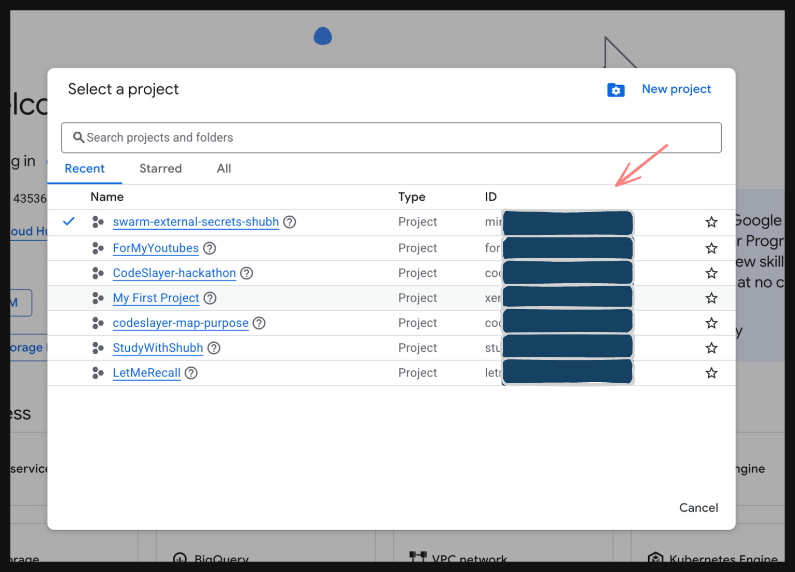
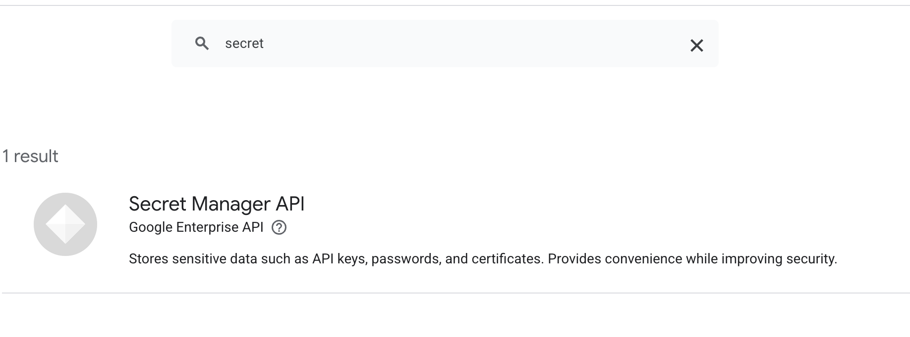

GCP Secret Manager — Operation Guide¶
Provider: Google Cloud Platform (GCP) Secret Manager Plugin: swarm-external-secrets
This guide walks you through setting up and using GCP Secret Manager as a secrets provider for swarm-external-secrets — from enabling the API all the way to reading live secrets inside a running Docker container.
Table of Contents¶
- Prerequisites
- Install Go Dependencies
- Enable Secret Manager API
- GCP Project Setup
- Option A — CLI (Recommended)
- Option B — GCP Console UI
- Install the gcloud CLI
- Create Secrets in GCP
- Build & Install the Plugin
- Configure & Enable the Plugin
- Deploy a Stack Using GCP Secrets
- Updating Secrets (Rotation)
1. Prerequisites¶
Before you begin, make sure you have:
- A Google Cloud account with billing enabled
- Docker with Swarm mode available
- Go installed (for dependency management)
gcloudCLI installed (covered in Step 5)- Your GCP Project ID handy (e.g.,
my-project-12345)
Finding your Project ID: You can find it on the GCP Home Dashboard or by clicking the project selector at the top of the console.

2. Install Go Dependencies¶
Run the following commands in your project root to pull in the required GCP libraries:
3. Enable Secret Manager API¶
Before anything else, the Secret Manager API must be enabled on your GCP project.
Go to console.cloud.google.com, search for Secret Manager, and enable the API. If prompted to enable billing, do so.

4. GCP Project Setup¶
You need to: - Enable the API - Create a Service Account for the plugin - Grant it the correct permissions - Download a JSON key file
Choose your preferred method below.
Option A — CLI (Recommended)¶
Replace
YOUR_PROJECT_IDwith your actual GCP Project ID throughout.
4A.1 — Enable the Secret Manager API¶
4A.2 — Create a Service Account¶
gcloud iam service-accounts create swarm-secrets-sa \
--display-name="Swarm External Secrets GCP" \
--project=YOUR_PROJECT_ID
4A.3 — Grant Permissions¶
# Grant read access to secrets
gcloud projects add-iam-policy-binding YOUR_PROJECT_ID \
--member="serviceAccount:swarm-secrets-sa@YOUR_PROJECT_ID.iam.gserviceaccount.com" \
--role="roles/secretmanager.secretAccessor"
# Grant admin access (needed for listing/managing secrets)
gcloud projects add-iam-policy-binding YOUR_PROJECT_ID \
--member="serviceAccount:swarm-secrets-sa@YOUR_PROJECT_ID.iam.gserviceaccount.com" \
--role="roles/secretmanager.admin"
4A.4 — Download the Key File¶
gcloud iam service-accounts keys create gcp-key.json \
--iam-account=swarm-secrets-sa@YOUR_PROJECT_ID.iam.gserviceaccount.com
Already have
gcp-key.json? If you completed the UI setup below, skip this step — you already have the key.
Option B — GCP Console UI¶
4B.1 — Create a Service Account¶
- In the GCP Console, search for Service Accounts (under IAM & Admin).
- Click + CREATE SERVICE ACCOUNT.
- Name it
docker-secrets-plugin, then click Create and Continue. - Under "Select a role", search for and select Secret Manager Secret Accessor.
⚠️ Critical: Skipping this step will result in
403 Permission Deniederrors.
- Click Done.
4B.2 — Download the JSON Key¶
- Click on the
docker-secrets-pluginservice account in the list. - Go to the KEYS tab.
- Click ADD KEY → Create new key.
- Select JSON and click Create.
- A
.jsonfile will be downloaded. Move it to your project folder and rename it togcp-key.json.
5. Install the gcloud CLI¶
macOS / Linux:
Follow the prompts and accept the permissions when asked.
After installation, initialize and log in:
This will open a browser to authenticate. Make sure to: - Log in with the same Google account you used to set up the GCP project. - Select the correct project that contains your secrets.
6. Create Secrets in GCP¶
Via CLI (Recommended)¶
# Create the secret
gcloud secrets create my-database-password \
--replication-policy="automatic" \
--project=YOUR_PROJECT_ID
# Add the initial secret version (the actual value)
echo -n '{"password":"super-secret-value-v1"}' | \
gcloud secrets versions add my-database-password \
--data-file=- \
--project=YOUR_PROJECT_ID
Secret format: Values are stored as JSON objects. The key inside the JSON (e.g.,
"password") is what you'll reference via thegcp_fieldlabel later.
Via GCP Console UI¶
- Go to Secret Manager.
- Select your project from the top dropdown.
- Click + CREATE SECRET.
- Fill in the details:
| Field | Value |
|---|---|
| Name | my-database-password |
| Secret value | {"password":"super-secret-value-v1"} |
| Replication policy | Automatic |
- Click CREATE SECRET.
7. Build & Install the Plugin¶
Run these commands from the root of the
swarm-external-secretsproject.
Step 1 — Navigate to the project directory¶
Step 2 — Initialize Docker Swarm (if not already done)¶
If you see
"This node is already part of a swarm", that's fine — continue.
Step 3 — Remove any old plugin version¶
docker plugin disable swarm-external-secrets:latest --force 2>/dev/null || true
docker plugin rm swarm-external-secrets:latest --force 2>/dev/null || true
Step 4 — Build the Docker image¶
Step 5 — Create the plugin rootfs directory¶
Step 6 — Extract the binary into rootfs¶
# Remove any leftover container from a previous run
docker rm -f temp-container 2>/dev/null || true
# Create (but don't run) a container from the image
docker create --name temp-container swarm-external-secrets:temp
# Export the container's full filesystem into plugin/rootfs
docker export temp-container | tar -x -C plugin/rootfs
# Clean up
docker rm temp-container
docker rmi swarm-external-secrets:temp
Step 7 — Copy the plugin config¶
Step 8 — Create the Docker plugin¶
Step 9 — Clean up the build directory¶
8. Configure & Enable the Plugin¶
Step 1 — Load your GCP key as an environment variable¶
Because the plugin runs in an isolated container, it cannot directly access files on your host. Instead, pass the key contents inline:
Step 2 — Disable the plugin temporarily (before reconfiguring)¶
Step 3 — Apply GCP configuration¶
docker plugin set swarm-external-secrets:latest \
SECRETS_PROVIDER="gcp" \
GCP_PROJECT_ID="YOUR_PROJECT_ID" \
GCP_CREDENTIALS_JSON="${GCP_KEY_CONTENT}" \
ENABLE_ROTATION="true" \
ROTATION_INTERVAL="30s" \
ENABLE_MONITORING="false"
Note:
GCP_CREDENTIALS_JSONembeds the key file contents directly, so you don't need to worry about file paths inside the container.
Step 4 — Set permissions and enable the plugin¶
docker plugin set swarm-external-secrets:latest gid=0 uid=0
docker plugin enable swarm-external-secrets:latest
Step 5 — Verify the plugin is running¶
Expected output:
9. Deploy a Stack Using GCP Secrets¶
Step 1 — Review the docker-compose.yml¶
The docker-compose.yml in the project root is pre-configured with GCP secret labels:
secrets:
mysql_root_password:
driver: swarm-external-secrets:latest
labels:
gcp_secret_name: "projects/YOUR_PROJECT_ID/secrets/mysql-root-password"
gcp_field: "root_password"
⚠️ Important: Replace
YOUR_PROJECT_IDwith your actual project ID. Also make sure the referenced GCP secrets exist and contain JSON values with the matching field key (e.g.,{"root_password":"your-value"}).
Step 2 — Create the required GCP secrets¶
# --- mysql-root-password ---
gcloud secrets create mysql-root-password \
--replication-policy="automatic" \
--project=YOUR_PROJECT_ID
echo -n '{"root_password":"my-root-pass-123"}' | \
gcloud secrets versions add mysql-root-password \
--data-file=- \
--project=YOUR_PROJECT_ID
# --- mysql-user-password ---
gcloud secrets create mysql-user-password \
--replication-policy="automatic" \
--project=YOUR_PROJECT_ID
echo -n '{"user_password":"my-user-pass-456"}' | \
gcloud secrets versions add mysql-user-password \
--data-file=- \
--project=YOUR_PROJECT_ID
Step 3 — Deploy the stack¶
Step 4 — Verify the deployment¶
# Wait a few seconds for services to start
sleep 10
# Check service status
docker service ls
# Check service logs
docker service logs myapp_busybox --tail 20
Step 5 — Read secrets directly from a running container¶
# Get the task ID of the running container
TASK_ID=$(docker service ps myapp_busybox \
--filter "desired-state=running" \
--format '{{.ID}}' | head -1)
# Resolve the actual container ID
CONTAINER_ID=$(docker inspect "$TASK_ID" \
--format '{{.Status.ContainerStatus.ContainerID}}')
# Read the secrets
echo "--- mysql_root_password ---"
docker exec "$CONTAINER_ID" cat /run/secrets/mysql_root_password
echo ""
echo "--- mysql_password ---"
docker exec "$CONTAINER_ID" cat /run/secrets/mysql_password
10. Updating Secrets (Rotation)¶
The plugin always reads the latest version of a secret. Adding a new version automatically triggers rotation on the next polling interval.
Option A — Update via CLI¶
echo -n '{"root_password":"UPDATED-root-pass-789"}' | \
gcloud secrets versions add mysql-root-password \
--data-file=- \
--project=YOUR_PROJECT_ID
Option B — Update via GCP Console UI¶
- Go to Secret Manager.
- Click on the secret name (e.g.,
mysql-root-password). - Click + NEW VERSION.
- Enter the new value:
{"root_password":"UPDATED-root-pass-789"} - Click ADD NEW VERSION.
Verify the Plugin Picked Up the Change¶
After updating a secret, wait for the rotation interval (default: 30s) and then check the logs:
You should see the plugin logging that it fetched and applied the updated secret value.
Tip: Both the CLI and Console UI methods create a new version of the secret — they are functionally identical. The plugin always resolves to the latest active version automatically.